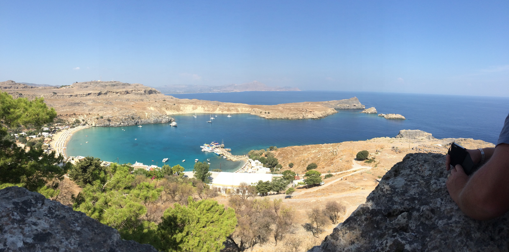
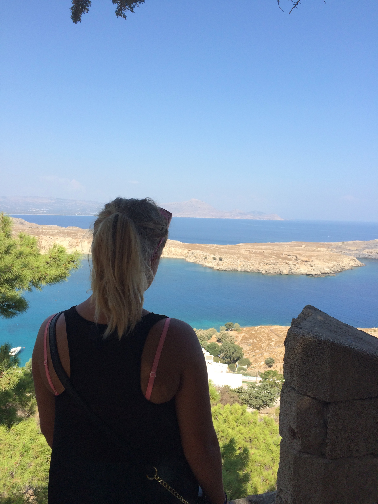

Rhodos
Framsida
Portugal
Polen
Tyskland
Rhodos
I haustferien 2014 reiste vi saman med eit vennepar til Ixia i Rhodos. Vi budde på hotell, og utanfor var det eit basseng som blei svært mykje brukt. Men vi bada også i havet, som var 2 minutt frå hotellet. Sidan det var veldig fint vér blei det mykje bading. Likvel var vi til Rhodos by ein dag. Der var det mange fine og gamle bygningar som vi såg på,samt som det også vart litt shopping. Ein anna dag reiste berre vi, familien min, til ein by som heiter Lindos. Der gjekk vi opp på ein "fjelltopp", gjekk litt rundt i byen og til slutt bada vi i havet før vi reiste tilbake på hotellet. Dei to første bileta nedanfor er frå Lindos. Ein av dei siste dagane vi var der bestemte vi oss for å ta ein dagstur til Tyrkia med båt. Det var ein guida tur, slik at vi fekk sjå mykje av Tyrkia på få timar.
 
Når vi reiste på stranda hadde eg med:
Solkrem
Bikini
Handkle
Drikke og noko til å ete